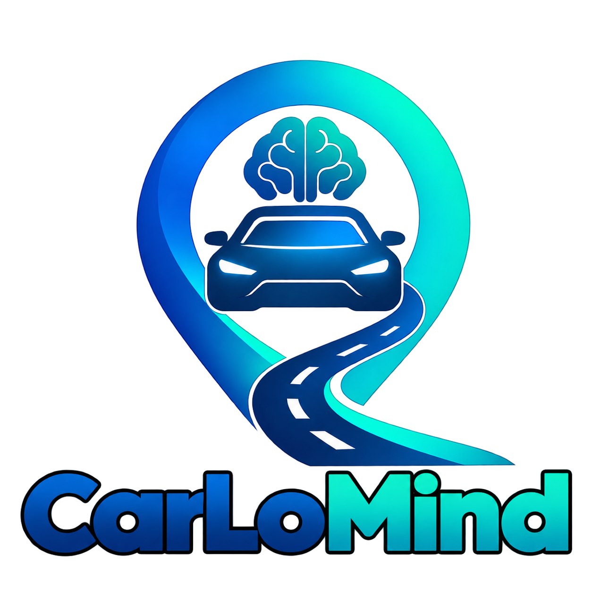

DEIN PARKPLATZ, IMMER IM BLICK
Finde dein geparktes Fahrzeug wieder.
CarLoMind hilft dir, deinen Parkplatz schnell wiederzufinden – automatisch oder mit einem Tippen.
Speichere den Standort, wenn sich dein Fahrzeug per Bluetooth trennt, oder halte ihn manuell fest. Deine gespeicherten Parkorte findest du anschließend in der App wieder.
Ein unabhängiges Android-Projekt von P34nuts

CARLOMIND · PARKORT SPEICHERN, WIEDERFINDEN
Logo-Intro ansehen11 Sek. · mit Originalton
Das Video wird erst geladen, wenn du es selbst startest.
FÜR DEINEN FAHRALLTAG
Einmal speichern.
Später wiederfinden.
Die wichtigsten Werkzeuge für deine gespeicherten Parkorte – übersichtlich in einer App.
Alle Infos bei Google Play-
Automatisch nach Bluetooth-Trennung
CarLoMind kann deinen Parkort speichern, wenn die Verbindung zum zugeordneten Fahrzeug getrennt wird.
-
Mit einem Tippen sichern
Speichere einen Standort jederzeit manuell, wenn du deinen Parkplatz festhalten möchtest.
-
Verlauf und Favoriten
Behalte gespeicherte Parkorte im Überblick und markiere wichtige Orte als Favoriten.
-
Kompass und Navigation
Lass dich mit Kompass und Navigation zu deinem gespeicherten Standort führen.
-
Mehrere Fahrzeuge
Verwalte verschiedene Fahrzeuge mit jeweils zugeordneten Bluetooth-Geräten.
-
Schneller Zugriff
Widgets, Schnellzugriffe und eine einstellbare Wartezeit unterstützen deine Parkroutine.
STANDORT MIT ZWECK
Parkort speichern – nicht dauerhaft überwachen.
CarLoMind verwendet deinen Standort nur beim Speichern eines Parkplatzes. Die App überwacht deinen Standort nicht dauerhaft. Für automatisches Speichern bei geschlossener App kann Android den Standortzugriff „Immer zulassen“ erfordern; Hintergrundaufgaben können je nach Gerät und Energiespareinstellungen verzögert werden.
CARLOMIND FÜR ANDROID
Dein Parkplatz ist nur einen Blick entfernt.
Entdecke CarLoMind im Google Play Store.